GNS3 & VirtualBox 보안 인프라 구축
GNS3와 VirtualBox를 활용한 네트워크 인프라 구축 및 보안 솔루션 적용 프로젝트
00. Overall Network Topology

Figure 1. 통합 네트워크 인프라 구성도 (GNS3 & VMware 연동)
GNS3를 이용하여 가상 네트워크 인프라를 구축하고, 방화벽 정책 설정, 라우터 이중화(HSRP), VPN 서버 구축,
IDS 및 SIEM 시스템을 각각 개별적으로 구축하여 실습한 프로젝트입니다.
01. GNS3 Infrastructure Setup
GNS3 내 가상 장비를 활용하여 방화벽 정책과 라우터 이중화(HSRP)를 구성했습니다.
1. Firewall Rules (Cisco ASAv)
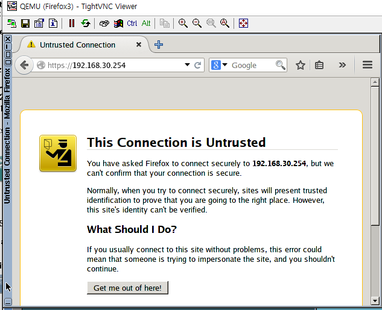
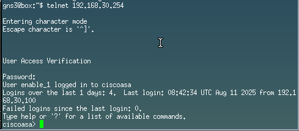
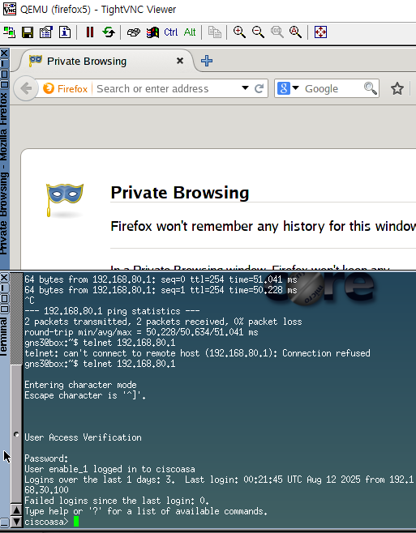
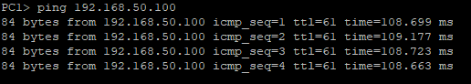
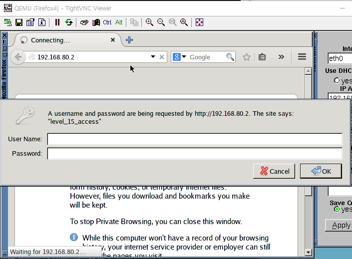
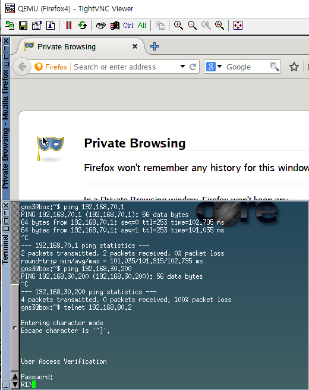
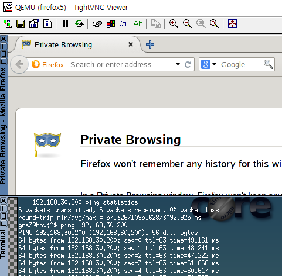
2. HSRP Configuration (High Availability)
라우터 장애에 대비하여 HSRP(Host Standby Router Protocol)를 설정했습니다. Virtual Gateway : 192.168.50.254
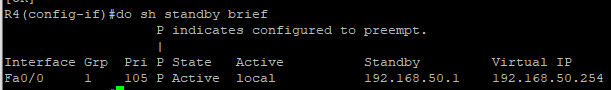
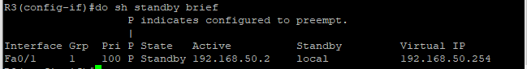
02. VirtualBox Security Solutions
VirtualBox에 설치된 가상 머신들을 연동하여 VPN, IDS, SIEM 보안 서버를 구축했습니다.
1. OpenVPN Server
pfSense를 활용해 외부 클라이언트가 가상 터널(10.10.10.0/24)을 통해 내부망에 접속하는 환경을 구현했습니다.
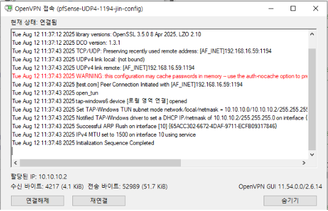
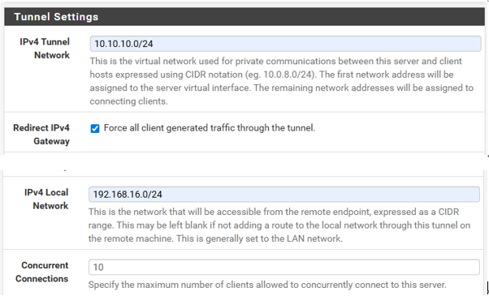
2. Threat Detection Scenarios (Snort)
Scenario 1: ICMP & HTTP
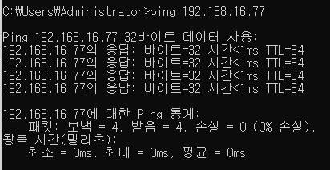
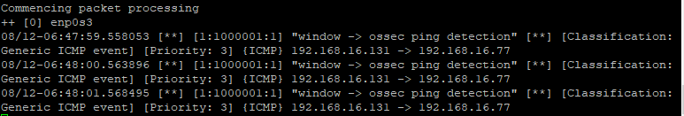
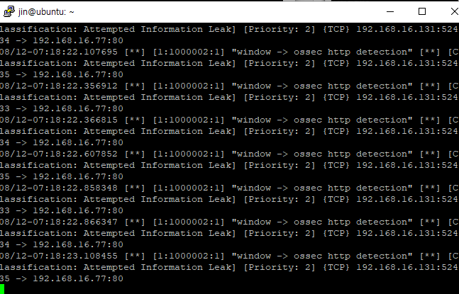
Scenario 2: Inter-Network Ping
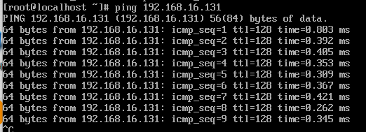
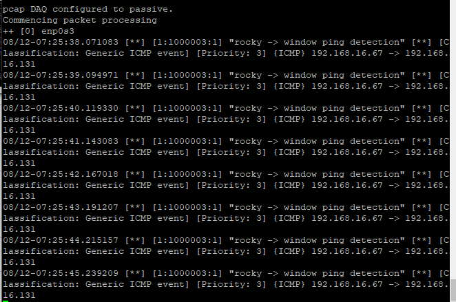
Scenario 3: Command Injection
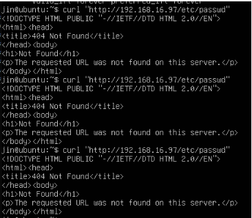
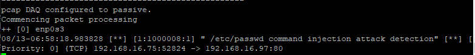
Scenario 4: DDoS (Land Attack)
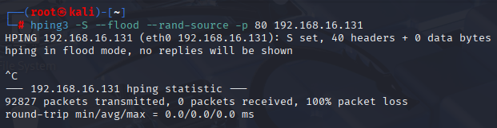
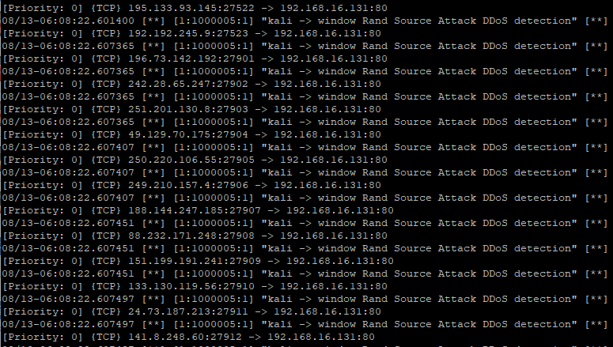
Scenario 5: SYN Scanning
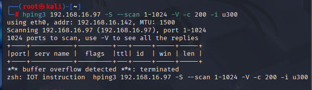
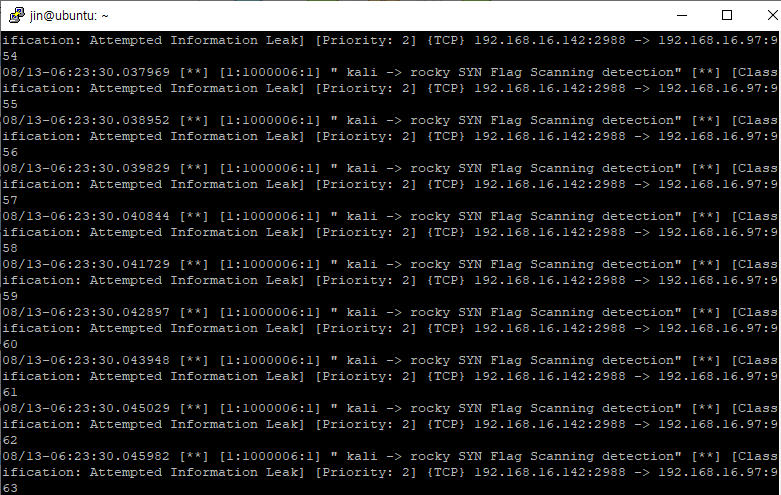
3. Threat Detection Scenarios (Suricata)
Scenario 1: ICMP & HTTP
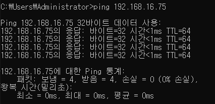
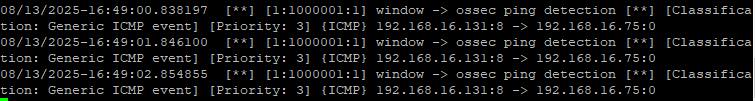
Scenario 2: Inter-Network Ping
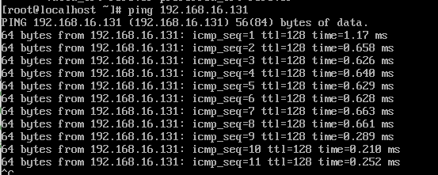
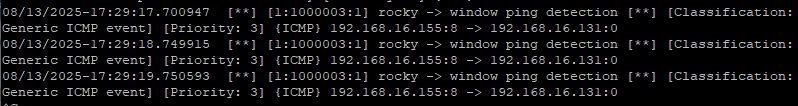
Scenario 3: Command Injection
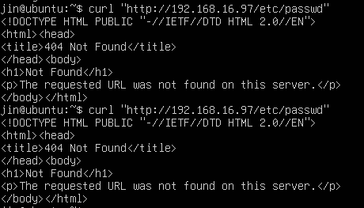
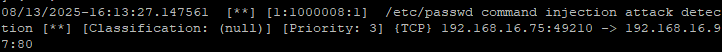
Scenario 4: DDoS (Land Attack)
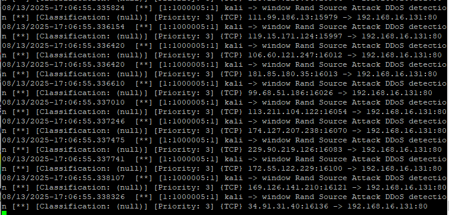
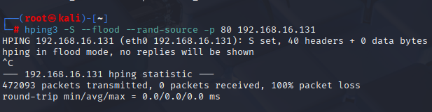
Scenario 5: SYN Scanning
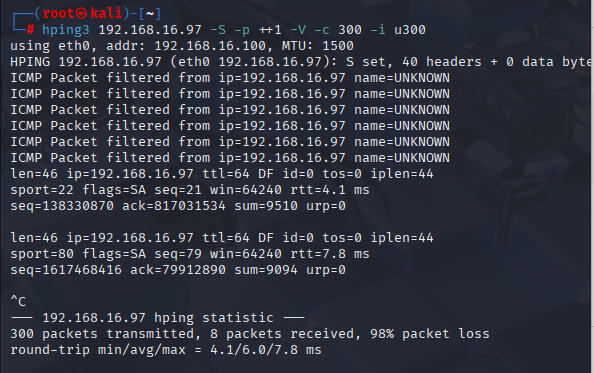
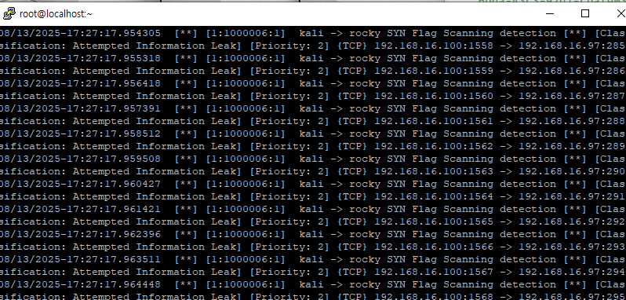
4. OSSEC 구축
OSSEC 매니저 서버와 Windows/Rocky Linux 에이전트를 연동하여 실시간 통합 로그 모니터링 체계를 구축했습니다.
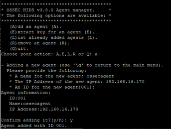
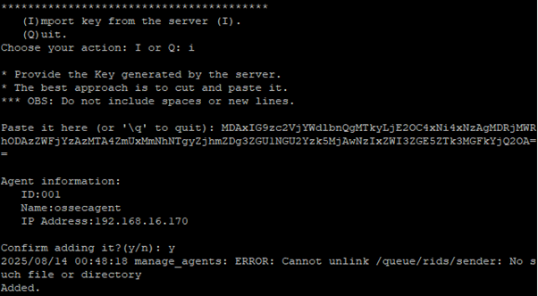
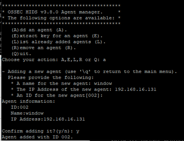
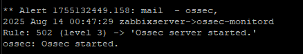
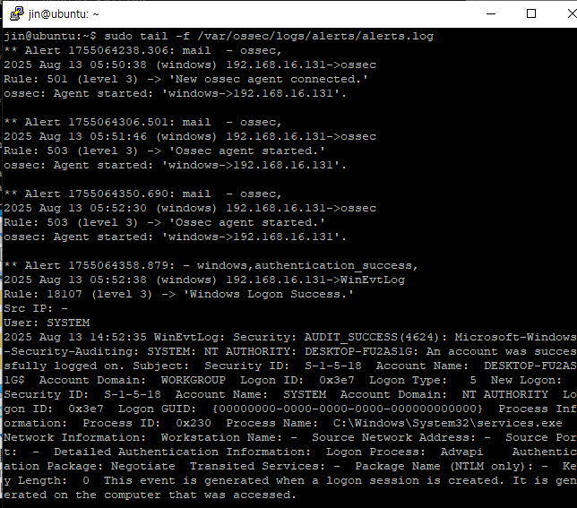
5. Zabbix 구축
Zabbix Server를 통해 Windows 및 Ubuntu 에이전트의 시스템 자원 가동 상태를 시각화했습니다.
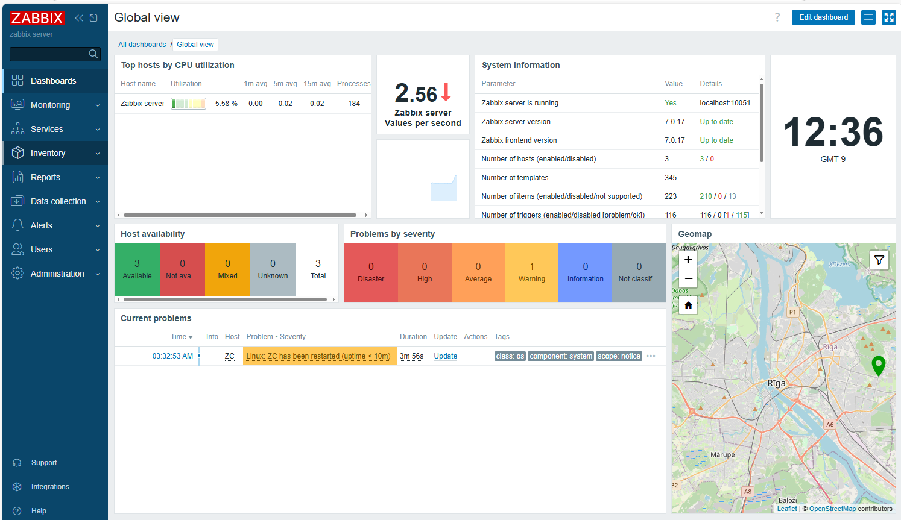
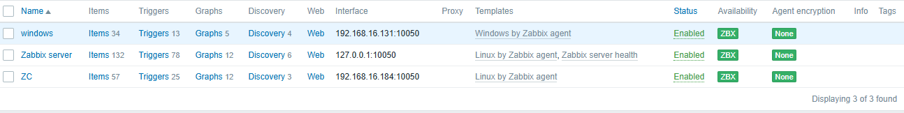